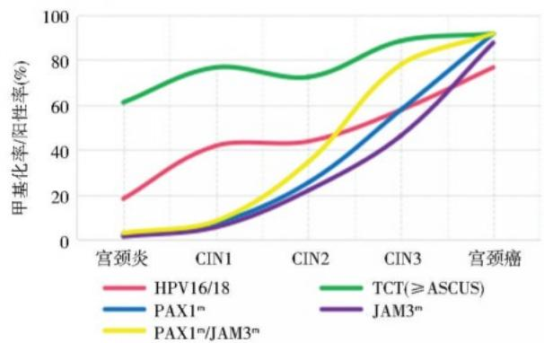

1Background & Objective
- Problem: HR-HPV DNA high sensitivity but low specificity — most infections transient → over-referral & overtreatment.
- TCT limits: low sensitivity & subjective — over-referral and added cost.
- Objective: evaluate PAX1m/JAM3m for cervical cancer diagnosis in HR-HPV+ women vs HPV16/18 & TCT.
2Study Design & Cohort
808
HR-HPV+ women
40y
median age
73
cervical cancer
- Setting: Beijing Ob/Gyn Hospital, Mar 2024 – Mar 2025; guideline-based colposcopy.
- Assays: HPV genotyping + TCT + PAX1m/JAM3m (qPCR).
- Endpoint: cervical cancer diagnosis by pathology; ROC & OR comparison.
91.8%
PAX1m/JAM3m · cancer
87.7%
JAM3m · cancer
76.7%
HPV16/18 · cancer
| Method · in cancer (n=73) | Positivity |
|---|---|
| PAX1m/JAM3m | 91.8% |
| JAM3m | 87.7% |
| HPV16/18 | 76.7% |
- Correlation: three-method comparison in cancer diagnosis — methylation strongest.
- Severity signal: positivity rises with grade, peaking in cancer — supports triage.
Methylation positivity low in CIN2−, spikes in CIN3 & cancer — mirrors severity (Fig. 1).
3Diagnostic Performance
86.3%
Sensitivity
91.0%
Specificity
77.6%
PPV
93.5%
NPV

Fig. 1 Positivity by grade — PAX1m/JAM3m 91.8% in cancer, spikes at CIN3/cancer.
Fig. AUC comparison — PAX1m/JAM3m 0.873 best.
AUC 0.873 (0.839–0.907) — best of the three methods (P<0.001).
4Referral Reduction
- Referral: 43.94% — 36.76% lower than TCT, 6.78% lower than HPV16/18.
- OR: 51.41 for cancer if methylation(+) — far stronger than HPV16/18 (4.46) / TCT (4.13).
- Trend: methylation positivity low in CIN2−, spikes in CIN3 & cancer — an objective severity signal.
- NPV 93.5%: methylation(−) cancer highly unlikely — safe follow-up.
- PPV 77.6%: methylation(+) warrants colposcopy.
- P<0.001: all OR comparisons significant.
- Clinical fit: methylation as reflex triage in HR-HPV+ screening.
Three-method correlation confirms methylation as the strongest single cancer signal.